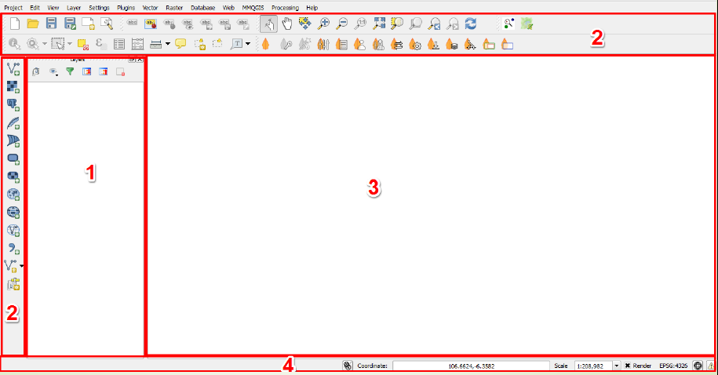
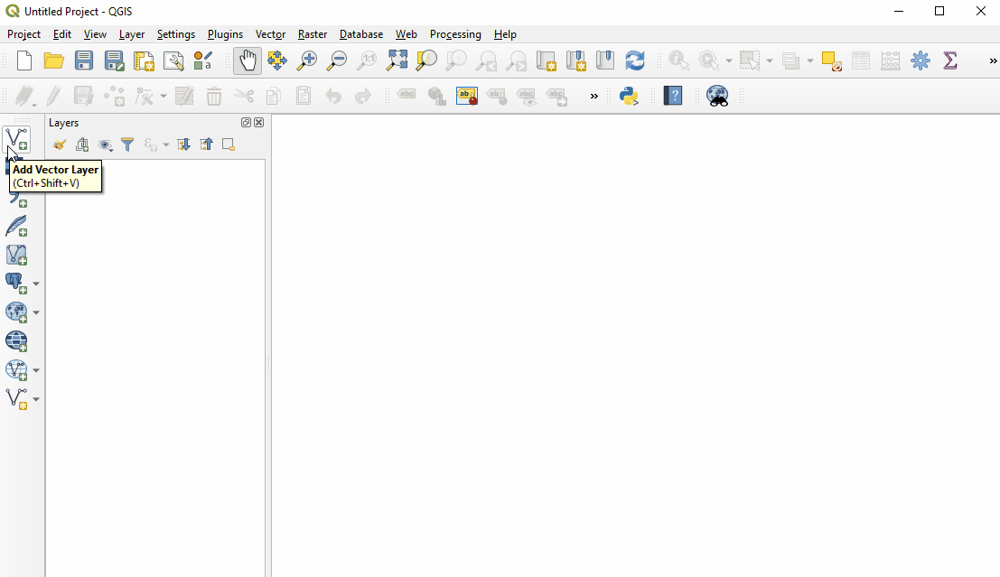
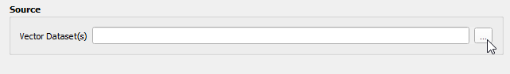
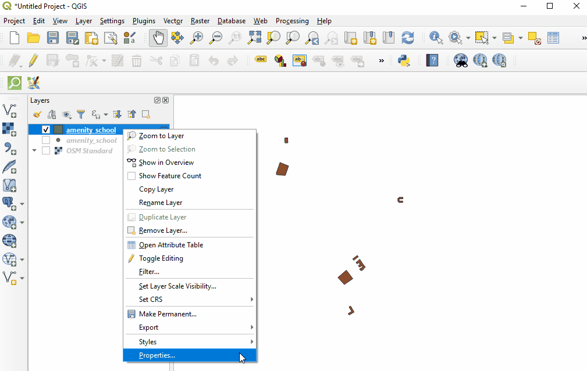
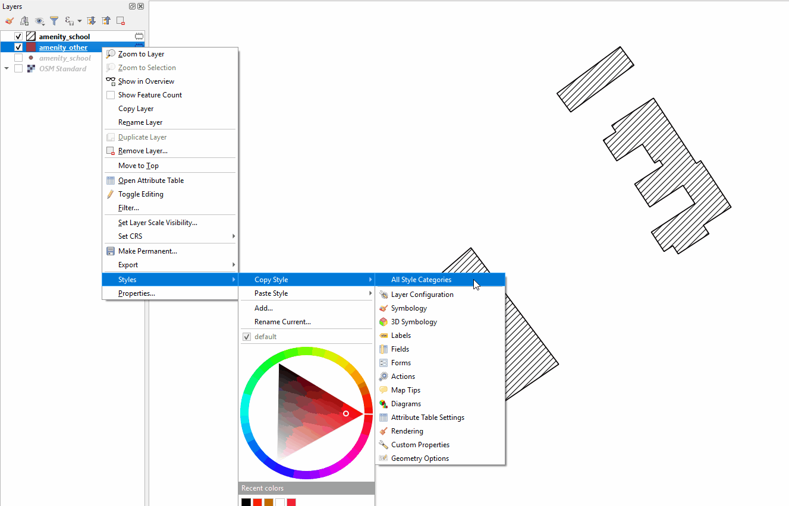
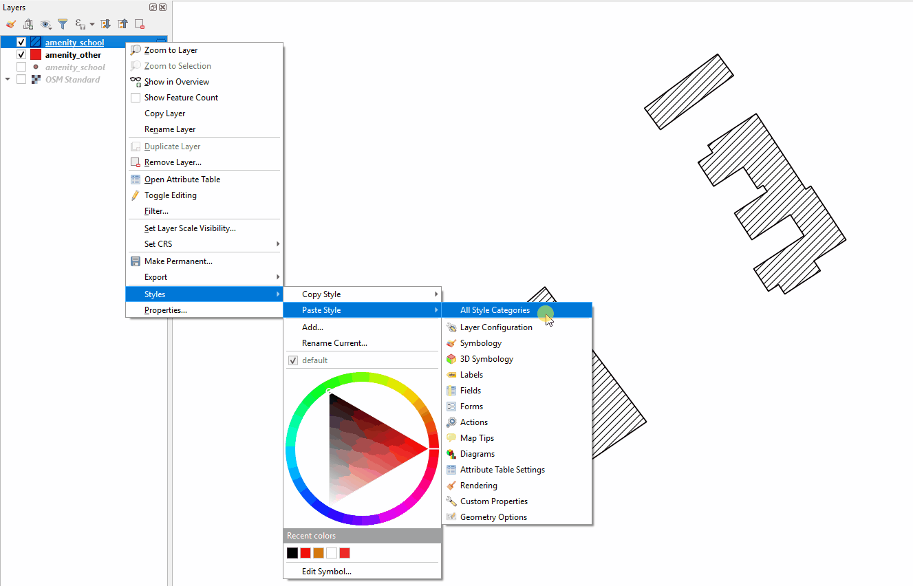
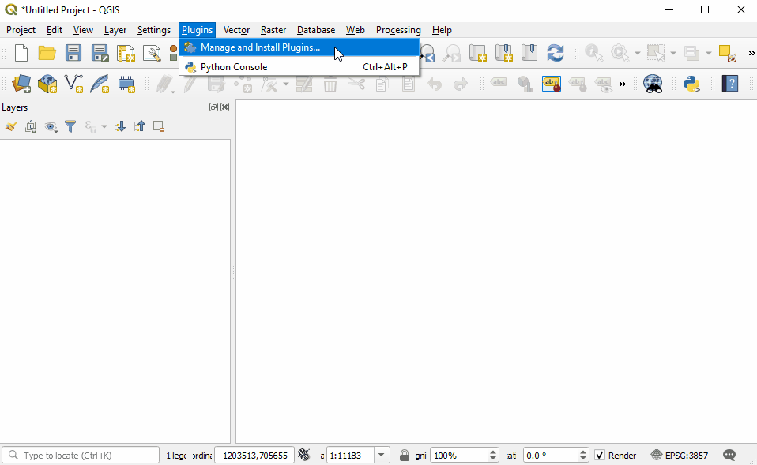
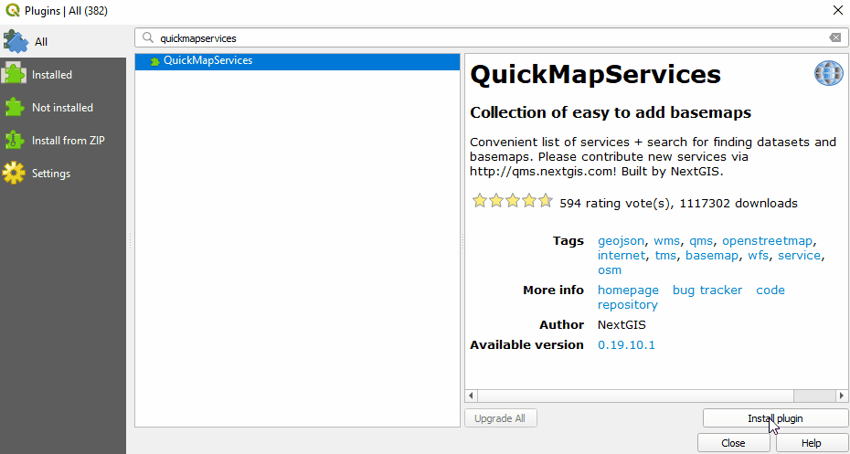
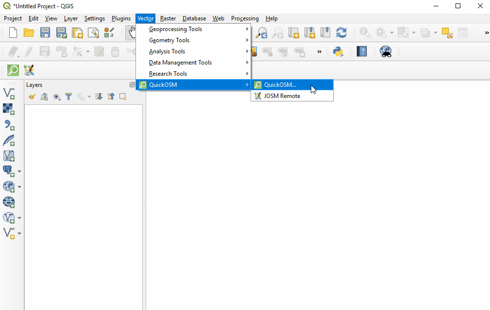

7.1 Introduction à QGIS
Objectifs du cours
Cette section couvre les compétences de base nécessaires à l’utilisation de QGIS. À la fin de cette section, vous devriez être en mesure de:
- Apprendre à installer QGIS
- Être capable de naviguer dans QGIS
- Comprendre comment ajouter des données dans QGIS
- Comprendre comment styliser les couches dans QGIS
- Apprendre à installer les plugins Quick OSM et QuickMapServices dans QGGIS
Activités d’apprentissage
QGIS est un programme de système d’information géographique (SIG) libre et gratuit. Les programmes SIG permettent aux utilisateurs d’afficher, de gérer et d’analyser des informations géospatiales sur l’ordinateur et de créer des produits cartographiques. Les données géospatiales qui peuvent être utilisées dans un SIG comprennent l’imagerie aérienne, les données GPS et les ensembles de données spatiales. À l’issue de cette section, un nouvel utilisateur devrait être en mesure de naviguer et de travailler avec des données dans QGIS.
Installation de QGIS
QGIS est disponible au téléchargement pour les systèmes d’exploitation suivants:
- Windows
- Mac OS
- Linux
Compétences et technologies requises
- Ordinateur avec:
- Système d’exploitation Windows, Mac, or Linux
- Espace disque libre suffisant (environ 10 Go) et droits d’administrateur pour l’installation des logiciels
- Recommandé: souris d’ordinateur
Pour Windows Avant l’installation, vous devez déterminer si votre ordinateur fonctionne sur un système 32 bits ou 64 bits.
- Ouvrez le menu Démarrer, cliquez avec le bouton droit de la souris sur “Ordinateur” et sélectionnez “Propriétés”.
- Sous “Système”, le type de système correct est indiqué.
Installation à partir d’un fichier partagé Si vous n’êtes pas en ligne, vous devrez installer QGIS à partir d’un fichier partagé. Le programme d’installation de QGIS peut être téléchargé et partagé via USB. Ce fichier peut être partagé avec des collègues et d’autres personnes qui souhaitent installer le programme. Pour installer à partir d’un fichier partagé:
- Allez dans le dossier qui vous a été communiqué et que vous avez téléchargé sur votre ordinateur.
- Sélectionnez le dossier d’installation approprié en fonction de votre système d’exploitation (Windows 32 bits, Windows 64 bits ou Mac).
- Ouvrez le programme d’installation pour commencer le processus d’installation.
Installation à partir du site Web de QGIS Si vous disposez d’une connexion internet, vous pouvez télécharger directement à partir du site web de QGIS. En outre, il est fortement recommandé de télécharger le logiciel directement à partir du site web de QGIS chaque fois que cela est possible. Cela permet de s’assurer que vous disposez de la version la plus récente du programme. Le fichier QGIS est supérieur à 300 Mo et son téléchargement peut prendre un certain temps, en fonction de votre connexion internet.
Pour installer:
- Visitez: http://www.qgis.org/en/site/forusers/download.html
- Sélectionnez le système d’exploitation approprié (Windows, Mac, Linux, etc.).
- Pour Windows - sélectionnez le système approprié (32 bits ou 64 bits).
- Cliquez sur le programme d’installation de QGIS Standalone pour lancer le processus de téléchargement.
- Une fois installé, ouvrez le programme d’installation pour commencer le processus d’installation.

Considérations relatives à l’installation de QGIS pour un grand nombre d’individus
- Tenir compte de la connectivité et de la capacité de l’internet avant d’installer QGIS pour un grand nombre de personnes via l’internet. Il est fortement recommandé qu’avant la formation/l’atelier, les fichiers d’installation soient téléchargés et chargés sur des clés USB pour une installation hors ligne.
- Lorsque vous téléchargez des installateurs hors ligne pour un grand groupe, veillez à télécharger un installateur pour tous les systèmes d’exploitation. Remarque : il sera important de télécharger le programme d’installation de Windows pour les DEUX systèmes 32 bits et 64 bits.
- Le processus de téléchargement et d’installation prend souvent plus de temps que prévu, surtout si l’on tient compte des compétences techniques et de la compatibilité du matériel. Il est donc recommandé de commencer le processus de téléchargement et d’installation au début de la formation ou pendant les pauses afin de garantir un processus fluide et le respect de l’agenda.
- Avant la formation/l’atelier, demander aux participants de s’assurer qu’ils disposent de suffisamment d’espace sur leur ordinateur (10 Go+) pour l’installation de QGIS.
Naviguer sur QGIS
Pour ouvrir QGIS, ouvrez le dossier QGIS sur votre bureau. Dans ce dossier, vous trouverez QGIS Desktop. Double-cliquez pour ouvrir ce programme

Le délai est long ? Pas de panique ! QGIS peut prendre quelques minutes pour se charger.
Familiarisez-vous avec les différentes parties du navigateur QGIS, passez votre souris sur les icônes pour voir les noms des différents outils. Remarque : votre navigateur peut présenter des outils différents de ceux de l’image ci-dessous.
- Panneau de couches - C’est ici que les couches (c’est-à-dire l’imagerie, les couches de bâtiments) seront listées. L’ordre des couches dans le panneau a un impact sur l’ordre des couches dans la carte - en d’autres termes, la couche en haut de la liste apparaîtra comme la couche supérieure dans la carte.
- **Barres d’outils **- La plupart des outils que vous utiliserez régulièrement dans QGIS apparaîtront sous forme d’icônes dans les barres d’outils situées en haut de l’écran, telles qu’enregistrer, zoomer, panoramique. Le nombre de barres d’outils dépend des différentes fonctions que vous avez activées ou installées.
- Canevas de la carte - Lorsque des couches sont ajoutées au panneau des couches, elles apparaissent dans le canevas de la carte.
- Barre d’état - Les coordonnées, l’échelle et la projection apparaissent dans la barre d’état.

Ajout des données
Passez votre souris sur les outils jusqu’à ce que vous trouviez l’outil “Ajouter un calque vectoriel”. Cliquez sur cette icône pour ouvrir la boîte de dialogue Ajouter des données vectorielles.

Cliquez sur le bouton “…” sous Source et naviguez jusqu’à l’emplacement de votre ordinateur où vous avez enregistré une couche vectorielle (par exemple .shp, .geojson) Sélectionnez le fichier et “ouvrir” .

Pour plus d’informations sur l’exportation de données à partir d’OSM, voir les instructions relatives à QuickOSM et aux outils d’exportation.
Styles des couches
Les couches de données peuvent être stylisées de trois façons : en ouvrant l’onglet des propriétés, en copiant d’autres couches dans le projet et en important un style .qml.
Sélection manuelle d’un style
Cliquez avec le bouton droit de la souris sur la couche de points et sélectionnez “Propriétés”. (Autre solution : double-cliquer sur une couche dans le panneau des couches)

Sélectionnez “Style” dans le menu de gauche. Cette fenêtre permet d’effectuer de nombreux changements et styles. Pour effectuer une modification de style de base, sélectionnez “Remplissage simple” en haut de la fenêtre. Vous pouvez maintenant modifier la couleur de remplissage, le style de remplissage, la couleur du trait (contour), la largeur du trait (contour), le style du trait (contour) et d’autres paramètres selon votre choix.

Sélectionnez “Ok” pour voir vos modifications dans le projet.
Vous pouvez également choisir parmi différents styles prédéfinis dans la fenêtre de style principale.

Copier les styles d’une autre couche de données
Cliquez avec le bouton droit de la souris sur l’un des autres calques. Sélectionnez “Style”, puis “Copier le style” et “Toutes les catégories de style”.

Ensuite, cliquez avec le bouton droit de la souris sur le calque auquel vous souhaitez appliquer le style. Sélectionnez “Style”, puis “Coller le style” et “Toutes les catégories de style”. Les styles des couches de points ne peuvent être copiés et collés que sur d’autres couches de points, les styles des couches de polygones ne peuvent être copiés et collés que sur d’autres couches de polygones, etc.

Stylage d’un calque à partir d’un fichier .qml importé
Un fichier .qml contient des informations sur les styles, y compris les étiquettes, exportées à partir d’une couche. Ce fichier peut être sauvegardé et partagé pour garantir une utilisation cohérente de styles particuliers, par exemple, si une organisation utilise un schéma de couleurs et une police de caractères particuliers pour toutes ses cartes.
Avant d’importer un fichier .qml dans QGIS, vous devez recevoir ou télécharger un fichier .qml. Les fichiers .qml et .shp pratiques sont disponibles ici.
- Double-cliquez sur une couche dans le panneau des couches ou cliquez avec le bouton droit de la souris sur la couche de points et sélectionnez “Propriétés”.
- Sélectionnez “Style” dans le menu de gauche.
- Dans le coin inférieur gauche de la fenêtre Style, sélectionnez le bouton “Style”. Cliquez sur “charger” le style.
- Naviguez jusqu’au fichier .qml enregistré sur votre ordinateur et sélectionnez-le.
- Cliquez sur “Ok”. Votre calque prendra en compte tous les choix de style enregistrés dans le fichier .qml.
Installation des greffons
Outils et compétences nécessaires
- Connexion internet
- QGIS installé
- Navigué sur QGIS
- Pour QuickOSM : balisage OSM et modèles de données
Temps estimé : <5 minutes, en fonction de la connexion internet
Les greffons vous permettent d’étendre les fonctionnalités de QGIS. Ces greffons peuvent permettre de télécharger directement des données d’OSM vers QGIS ou d’utiliser des outils d’aide à l’analyse.
Dans cet exercice, nous allons installer et utiliser deux plugins: QuickMapServices et QuickOSM.
| Astuces: |
|---|
| La gestion et l’installation des plugins nécessitent une connexion internet. Si le gestionnaire de plugins ne fonctionne pas, vérifiez votre connexion internet. Considérations pour le travail avec de grands groupes et/ou dans des environnements à faible accès à Internet Plug-in Manager nécessite une connexion Internet constante pour télécharger les plugins. Il est fortement recommandé aux animateurs de formations et d’ateliers de pré-télécharger les versions hors ligne pour les partager. |
Pour installer des plugins, cliquez sur l’élément de menu Plugins ‣ Gérer et installer des plugins.

QuickMapServices
QuickMapServices vous permet d’ajouter des cartes de base gratuites en ligne à vos cartes QGIS, y compris des cartes de base OSM.
| Note: |
|---|
| QuickMapServices fournit des cartes de base en ligne. L’utilisation de ces couches nécessite une connexion internet permanente. |
Dans la boîte de dialogue Plugin Manager qui s’ouvre, recherchez le plugin QuickMapServices. Pour ce faire, cliquez sur la barre de recherche et tapez ‘QuickMapServices’, le plugin apparaîtra dans la liste. Cliquez ensuite sur le bouton Installer le plugin.

Une fois installé, QuickMapServices est accessible par le menu supérieur Web ‣ QuickMapServices.
Dans le sous-menu QuickMapServices, il est possible d’accéder à plusieurs types de cartes de base, notamment OSM.

Pour l’imagerie aérienne, dans le sous-menu QuickMapServices, ouvrez “Paramètres”. Cliquez sur l’onglet “Plus de services”. Sélectionnez ‘Get Contributed Pack’.

Retournez au sous-menu QuickMapServices. Il y a maintenant une longue liste d’options pour les cartes de base, y compris Bing.

QuickOSM
QuickOSM vous permet de sélectionner et de télécharger des données OpenStreetMap pour les utiliser dans QGIS. QuickOSM fonctionne en extrayant des données spécifiques basées sur OSM à partir de balises (paires clé=valeur) et d’une zone d’intérêt.

Une fois installé, QuickOSM est accessible dans le menu supérieur Vecteur ‣ QuickOSM > QuickOSM
| Note: |
|---|
| Lorsque vous téléchargez des données via QuickOSM, il est préférable d’avoir une couche de carte de base centrée sur votre zone d’intérêt (voir QuickMapServices) et/ou au moins une couche shapefile/geojson dans la zone d’intérêt. Cela permet à QuickOSM de télécharger des données pour la bonne zone d’intérêt. |

Pour télécharger des données dans QuickOSM dans QGIS, vous devrez construire des requêtes pour télécharger les données exactes dont vous avez besoin. QuickOSM facilite la construction des requêtes, mais vous devrez toujours connaître les balises (c’est-à-dire les clés et les valeurs) pour générer des données. Il vous sera plus facile de vous souvenir de ces balises au fur et à mesure que vous acquerrez de l’expérience avec OSM - dans JOSM, QGIS et d’autres programmes.
Voici quelques exemples de balises couramment utilisées dans les requêtes OSM.
| amenity | school |
| place_of_worship | |
| bar | |
| bank | |
| highway | primary |
| residential | |
| path | |
| office | goverment |
| ngo | |
| shop | clothes |
| tailor |
| Astuces: |
|---|
| Clé: Pour des ressources sur les clés et les valeurs à utiliser, voir le modèle de données et le balisage sur OSM. |
| Valeur : Il est possible d’enchaîner plusieurs valeurs en les séparant par une virgule (par exemple : amenity=school,hospital). Pour télécharger toutes les valeurs possibles d’une clé (c’est-à-dire amenity=*), laissez le champ de la valeur vide. |
| Étendue : La sélection de l’étendue permet de choisir la zone dans laquelle QuickOSM va rechercher et télécharger des données. Il y a plusieurs options que vous pouvez sélectionner lors du choix de l’étendue : |
- Dans:
- Autour:
- Étendue du caneva:
- Étendue de la couche:
- Pas spatial: L’extension du canevas de la carte convient le mieux lorsque vous ne disposez pas d’un shapefile/geojson qui couvre votre zone d’intérêt (c’est-à-dire les limites administratives) et/ou une petite zone d’intérêt. Pour baser votre étendue sur une couche, utilisez le menu déroulant à droite pour sélectionner la couche appropriée.|

Une fois que vous avez fourni votre clé et votre valeur, et que vous avez sélectionné votre étendue, cliquez sur ‘Exécuter la requête’.
Si votre requête ne marche pas :
- Avez-vous utilisé des lettres majuscules dans vos clés et vos valeurs ? Assurez-vous que les clés et les valeurs sont en minuscules. Par exemplle: key=amenity value=school PAS key=Amenity et value=SCHOOL
- Avez-vous utilisé l’orthographe correcte dans vos clés et valeurs ? Assurez-vous que les clés et les valeurs sont orthographiées EXACTEMENT comme elles le sont dans les guides OSM. Dans le cas contraire, QuickOSM recherchera la mauvaise balise. Par exemple : key=amenity NOT key=amenities
| Note: |
|---|
| Une zone trop grande ou un téléchargement de données trop important peut surcharger l’API ou être trop important pour une connexion internet lente. Si vous avez des difficultés à télécharger des données, essayez de réduire la zone ou de limiter le téléchargement de données en modifiant vos balises. Par exemple, le téléchargement de tous les bâtiments d’Afrique, même de certaines villes, est trop important pour QuickOSM. Essayez plutôt de télécharger une zone plus petite ou de limiter le téléchargement à tous les building=school. |
[Quiz] Testez vos connaissances
-
QGIS vous demande de faire un don à sa plateforme pour soutenir le développement et la communauté QGIS.
a.Vrai
b.Faux
-
Quel est le plugin qui permet de télécharger des données OSM directement d’OSM vers QGIS ?
a.QuickLoad
b.QuickMapServices
c.OSM Download Manager
d.QuickOSM
-
Vous trouverez ci-dessous plusieurs façons de charger et de styliser les couches dans QGIS, à l’exception des suivantes :
a.Sélectionner manuellement un style
b.Copier les styles d’un autre jeu de données
c.Style de couche à partir de .qml
d.Lire le style de la symbiologie ESRI
Answer: 1. B| 2. D| 3. D
Liste de contrôle des activités
Vous avez déjà compris ce qu’est QGIS et comment QGIS peut vous aider à visualiser vos jeux de données, en particulier les jeux de données OSM. A la fin de cette section, vous devriez être capable de :
- Télécharger et installer QGIS
- Naviguer dans QGIS
- Ajouter des données dans QGIS
- Styliser une couche de données
- Installer des plugins supplémentaires
Ressources complémentaires
Présentation:
Ressources:
- Manuel de formation sur QGIS: https://docs.qgis.org/2.18/en/docs/training_manual/
- Tutoriels sur QGIS: https://www.qgistutorials.com/en/docs/learning_resources.html
- Plus d’instructions sur l’installation de QGIS: https://docs.qgis.org/testing/en/docs/user_manual/introduction/getting_started.html#installing-qgis